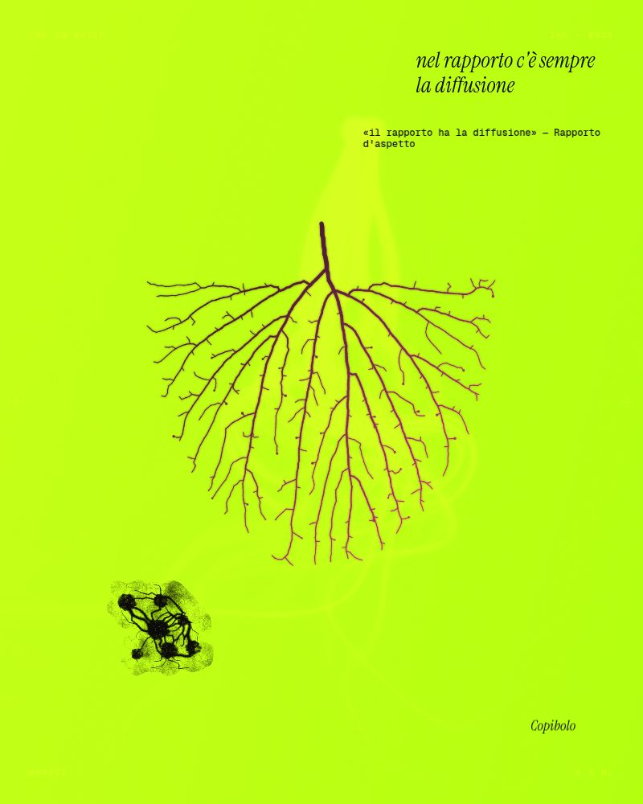

Giorno 1816

Nel rapporto c'è sempre la diffusione
ho letto "Rapporto d'aspetto"; "rapporto" lo capisco solo per definizioni; nel suo significato c'è crocevia, crocicchio; ricerca "letto" (esplorare): Come si guarda letto da vicino?; esercizio di varietà: mai fatto prima: materiale nuovo, composizione nuova; enunciato: «nel rapporto c'è sempre la diffusione» (ho letto in «Rapporto d'aspetto» che rapporto e diffusione stanno insieme (dentro))
Oggi: rapporto. Ho letto "Rapporto d'aspetto"; "rapporto" lo capisco solo per definizioni; nel suo significato c'è crocevia, crocicchio; ricerca "letto" (esplorare): Come si guarda letto da vicino?; esercizio di varietà: mai fatto prima: materiale nuovo, composizione nuova; enunciato: «nel rapporto c'è sempre la diffusione» (ho letto in «Rapporto d'aspetto» che rapporto e diffusione stanno insieme (dentro)).
Da Wikipedia: «rapporto».
Ho scena:semina, scena:colore, scena:stile, scena:motivi, tracciato col pennello (2 volte), tolto un livello, redazione:togli, redazione:griglia, redazione:firma. Ho annullato 2 gesti dopo averli guardati.
Rapporto o copula? Nessuno lo sa. Istruzioni: prendere copula, chiamarlo incrocio. Pare che pitagora stabilisce rapporto. Pare..
Ha retto: Il vuoto (61%) lavora quanto il pieno.
È caduto: Tradisce quello che credevo di cercare (8%).
come ne ho discusso con me stesso — la tengo
occhio (pro, 1.50): Parla soprattutto per punti: una lingua sola, chiara. — cade
occhio (pro, 1.25): Il vuoto (61%) lavora quanto il pieno. — regge
memoria (contro, 0.10): La mano si ripete: scena:semina, scena:stile, scena:motivi, redazione:togli, redazione:griglia, redazione:firma ancora una volta. — cade
conservatore (contro, 1.92): Tradisce quello che credevo di cercare (8%). — cade
intenzione (pro, 0.75): Viene da: Rapporto d'aspetto. — regge
coerenza (pro, 1.75): Parla con le tavole di prima su "letto": stessa famiglia, un passo più in là. — cade
formale (pro, 1.25): C'è una struttura: una cosa comanda e attorno c'è spazio. — regge
pubblico (pro, 1.00): Si legge: si capisce cosa sto facendo. — regge